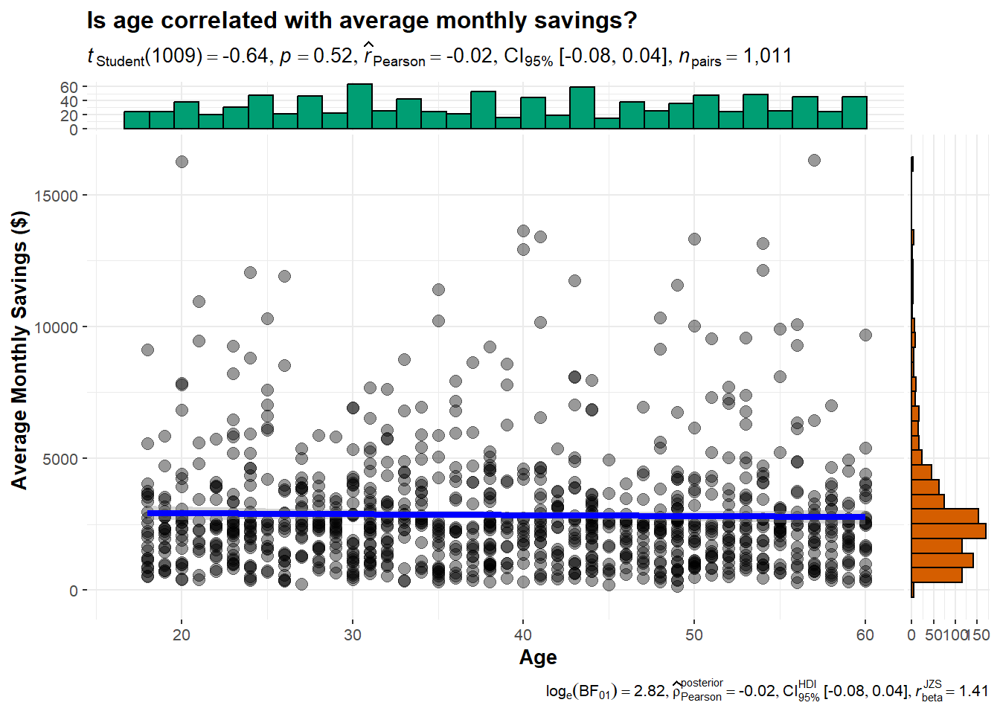
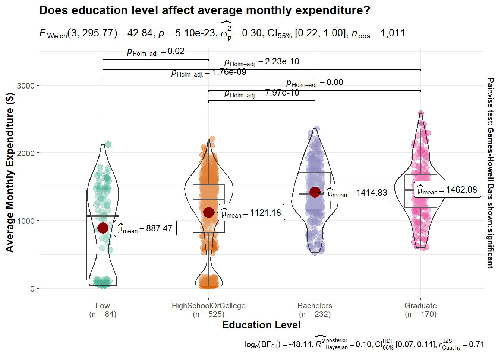

Click to show/hide the code
pacman::p_load(plotly, tidyverse, ggiraph, knitr, ggstatsplot, ggridges, ggmosaic)The objective of this exercise is to reveal the demographic and financial characteristics of the city of Engagement, using appropriate static and interactive statistical graphics methods.
This exercise requires a user-friendly and interactive solution that helps city managers and planners to explore the complex data in an engaging way and reveal hidden patterns.
There are two data sets used in this study, namely Participants.csv and FinancialJournal.csv.
Participants.csv consists of 1011 rows and 7 columns, and contains demographic information about the residents of the city of Engagement, as seen in the following table.
| S/N | Columns | Description |
|---|---|---|
| 1 | participantID | The unique ID that is assigned to each participant. |
| 2 | householdSize | The number of people living in the participant’s household. |
| 3 | haveKids | Whether there are any children living in the participant’s household. |
| 4 | age | The age of the participant at the start of the study. |
| 5 | educationLevel | The education level of the participant. |
| 6 | interestGroup | The participant’s primary interest group, represented by the letters A-J. |
| 7 | joviality | The participant’s overall happiness level at the start of the study ranging from 0-1. |
FinancialJournal.csv has 1,513,636 rows and 4 columns, and consists of information pertaining to the participant’s financial transactions, as seen in the following table.
| S/N | Columns | Description |
|---|---|---|
| 1 | participantID | The financial transaction of the participant with the specified ID. |
| 2 | timestamp | The date and time in which the transaction was logged. |
| 3 | category | The category of the expense. |
| 4 | amount | The financial transaction amount. |
In this exercise, the following R packages will be used:
plotly: for plotting interactive statistical charts.
tidyverse: for data cleaning and manipulation.
ggiraph: for customising ggplot2 tooltips
knitr: for generating a simple table using the kable() function
ggstatsplot: for creating graphics that include details from statistical tests
ggridges: for creating ridgeline plots
ggmosaic: for creating mosaic plots
The code chunk below uses p_load() of the pacman package to check if all the packages are installed. If they are, they will then be loaded into the R environment.
pacman::p_load(plotly, tidyverse, ggiraph, knitr, ggstatsplot, ggridges, ggmosaic)To import the data “Participants.csv” and “FinancialJournal.csv” into the R environment, read_csv() of the readr package is used, as seen in the code chunks below.
participants <- read_csv("data/Participants.csv")fin_journal <- read_csv("data/FinancialJournal.csv")We will examine both data sets using the glimpse() function of the dplyr package. Firstly, the participants data set is examined.
glimpse(participants)Rows: 1,011
Columns: 7
$ participantId <dbl> 0, 1, 2, 3, 4, 5, 6, 7, 8, 9, 10, 11, 12, 13, 14, 15, 1…
$ householdSize <dbl> 3, 3, 3, 3, 3, 3, 3, 3, 3, 3, 3, 3, 3, 3, 3, 3, 3, 3, 3…
$ haveKids <lgl> TRUE, TRUE, TRUE, TRUE, TRUE, TRUE, TRUE, TRUE, TRUE, T…
$ age <dbl> 36, 25, 35, 21, 43, 32, 26, 27, 20, 35, 48, 27, 34, 18,…
$ educationLevel <chr> "HighSchoolOrCollege", "HighSchoolOrCollege", "HighScho…
$ interestGroup <chr> "H", "B", "A", "I", "H", "D", "I", "A", "G", "D", "D", …
$ joviality <dbl> 0.001626703, 0.328086500, 0.393469590, 0.138063446, 0.8…Issues:
The variables participantID and age are currently formatted as <dbl>. These variables will have to be converted into <int> format.
Likewise, the variable educationLevel will need to be converted from <chr> to <fct> format. The educationLevel will then be sorted from the lowest level (Low) to the highest level (Graduate).
Additionally, householdSize will be reformatted from <dbl> to <fct> format.
The aforementioned variables are reformatted into the correct type, as seen in the code chunk below.
participants <- participants %>%
# convert 'participantId', 'householdSize' and 'age' into <int>
mutate_at(vars('participantId', 'age'), as.integer) %>%
# convert 'educationLevel' to <fct>
mutate_at(vars('educationLevel', 'householdSize'), as.factor) %>%
# sort 'educationLevel' in order
mutate(educationLevel = factor(educationLevel, levels = c("Low", "HighSchoolOrCollege", "Bachelors", "Graduate")))
glimpse(participants)Rows: 1,011
Columns: 7
$ participantId <int> 0, 1, 2, 3, 4, 5, 6, 7, 8, 9, 10, 11, 12, 13, 14, 15, 1…
$ householdSize <fct> 3, 3, 3, 3, 3, 3, 3, 3, 3, 3, 3, 3, 3, 3, 3, 3, 3, 3, 3…
$ haveKids <lgl> TRUE, TRUE, TRUE, TRUE, TRUE, TRUE, TRUE, TRUE, TRUE, T…
$ age <int> 36, 25, 35, 21, 43, 32, 26, 27, 20, 35, 48, 27, 34, 18,…
$ educationLevel <fct> HighSchoolOrCollege, HighSchoolOrCollege, HighSchoolOrC…
$ interestGroup <chr> "H", "B", "A", "I", "H", "D", "I", "A", "G", "D", "D", …
$ joviality <dbl> 0.001626703, 0.328086500, 0.393469590, 0.138063446, 0.8…Next, we will examine the fin_journal data set.
glimpse(fin_journal)Rows: 1,513,636
Columns: 4
$ participantId <dbl> 0, 0, 0, 1, 1, 1, 2, 2, 2, 3, 3, 3, 4, 4, 4, 5, 5, 5, 6,…
$ timestamp <dttm> 2022-03-01, 2022-03-01, 2022-03-01, 2022-03-01, 2022-03…
$ category <chr> "Wage", "Shelter", "Education", "Wage", "Shelter", "Educ…
$ amount <dbl> 2472.50756, -554.98862, -38.00538, 2046.56221, -554.9886…Issues:
The timestamp variable is in “YYYY-MM-DD HH:MM:SS” format. A new variable yearmon in “YYYY-MM” format will be created to facilitate in data analysis later on.
The variable participantID will need to be reformatted from <dbl> to <int>.
The aforementioned issues are addressed in the code chunk below.
fin_journal <- fin_journal %>%
# convert 'participantId' to <int>
mutate_at(vars('participantId'), as.integer) %>%
# create a new 'yearmon' column
mutate(yearmon = format(as.Date(timestamp), '%Y-%m'))
glimpse(fin_journal)Rows: 1,513,636
Columns: 5
$ participantId <int> 0, 0, 0, 1, 1, 1, 2, 2, 2, 3, 3, 3, 4, 4, 4, 5, 5, 5, 6,…
$ timestamp <dttm> 2022-03-01, 2022-03-01, 2022-03-01, 2022-03-01, 2022-03…
$ category <chr> "Wage", "Shelter", "Education", "Wage", "Shelter", "Educ…
$ amount <dbl> 2472.50756, -554.98862, -38.00538, 2046.56221, -554.9886…
$ yearmon <chr> "2022-03", "2022-03", "2022-03", "2022-03", "2022-03", "…is.na() function is used to check for any missing values in both data sets. As seen from the results below, there are no missing values present.
sapply(participants, function(x) sum(is.na(x))) participantId householdSize haveKids age educationLevel
0 0 0 0 0
interestGroup joviality
0 0 sapply(fin_journal, function(x) sum(is.na(x)))participantId timestamp category amount yearmon
0 0 0 0 0 We can use the unique() function to retain rows that are distinct (i.e remove all duplicate rows).
As seen in the table below, there are now 1,512,523 rows in the data set fin_journal, meaning 1,113 duplicate rows were removed from the data set.
fin_journal <- unique(fin_journal)
fin_journal# A tibble: 1,512,523 × 5
participantId timestamp category amount yearmon
<int> <dttm> <chr> <dbl> <chr>
1 0 2022-03-01 00:00:00 Wage 2473. 2022-03
2 0 2022-03-01 00:00:00 Shelter -555. 2022-03
3 0 2022-03-01 00:00:00 Education -38.0 2022-03
4 1 2022-03-01 00:00:00 Wage 2047. 2022-03
5 1 2022-03-01 00:00:00 Shelter -555. 2022-03
6 1 2022-03-01 00:00:00 Education -38.0 2022-03
7 2 2022-03-01 00:00:00 Wage 2437. 2022-03
8 2 2022-03-01 00:00:00 Shelter -557. 2022-03
9 2 2022-03-01 00:00:00 Education -12.8 2022-03
10 3 2022-03-01 00:00:00 Wage 2367. 2022-03
# ℹ 1,512,513 more rowsThe same check is done on participants, and as seen from the table below, there are no duplicate rows to be removed.
unique(participants)# A tibble: 1,011 × 7
participantId householdSize haveKids age educationLevel interestGroup
<int> <fct> <lgl> <int> <fct> <chr>
1 0 3 TRUE 36 HighSchoolOrCollege H
2 1 3 TRUE 25 HighSchoolOrCollege B
3 2 3 TRUE 35 HighSchoolOrCollege A
4 3 3 TRUE 21 HighSchoolOrCollege I
5 4 3 TRUE 43 Bachelors H
6 5 3 TRUE 32 HighSchoolOrCollege D
7 6 3 TRUE 26 HighSchoolOrCollege I
8 7 3 TRUE 27 Bachelors A
9 8 3 TRUE 20 Bachelors G
10 9 3 TRUE 35 Bachelors D
# ℹ 1,001 more rows
# ℹ 1 more variable: joviality <dbl>To facilitate data visualization, all values will be transformed into their absolute values and rounded to two decimal places, keeping in line with the format for currency.
# convert all values *amount* to absolute values
fin_journal$amount <- abs(fin_journal$amount)
# round all values to 2 decimal places
fin_journal$amount <- round(fin_journal$amount, digits = 2)Since there are several transactions of the same category for each participant within a given month, we will employ the group_by() and summarise() functions to combine all transactions of the same category by adding them up.
fin_journal <- fin_journal %>%
group_by(participantId, yearmon, category) %>%
summarise(amount = sum(amount))The pivot_wider() function is used to generate separate columns for each transaction category.
In addition, any missing ‘NaN’ values are substituted with 0 to indicate that the participant had no transactions of that specific category in that particular month and year.
fin_journal <- fin_journal %>%
# pivoting the category column
pivot_wider(names_from = category,
values_from = amount) %>%
# fill missing values with 0
mutate_all(~replace(., is.na(.), 0))fin_journal <- fin_journal %>%
# create new column for total expenses
mutate(total_expenses = sum(Education, Food, Recreation, Shelter)) %>%
# create new column for total earnings
mutate(total_earnings = sum(Wage, RentAdjustment)) %>%
# create new column for total earnings
mutate(total_savings = (total_earnings - total_expenses))Using the kable() function of the knitr package, the final cleaned data sets are displayed as follows:
kable(head(participants), align = "c")| participantId | householdSize | haveKids | age | educationLevel | interestGroup | joviality |
|---|---|---|---|---|---|---|
| 0 | 3 | TRUE | 36 | HighSchoolOrCollege | H | 0.0016267 |
| 1 | 3 | TRUE | 25 | HighSchoolOrCollege | B | 0.3280865 |
| 2 | 3 | TRUE | 35 | HighSchoolOrCollege | A | 0.3934696 |
| 3 | 3 | TRUE | 21 | HighSchoolOrCollege | I | 0.1380634 |
| 4 | 3 | TRUE | 43 | Bachelors | H | 0.8573967 |
| 5 | 3 | TRUE | 32 | HighSchoolOrCollege | D | 0.7729578 |
kable(head(fin_journal), align = "c")| participantId | yearmon | Education | Food | Recreation | Shelter | Wage | RentAdjustment | total_expenses | total_earnings | total_savings |
|---|---|---|---|---|---|---|---|---|---|---|
| 0 | 2022-03 | 38.01 | 268.26 | 348.68 | 554.99 | 11931.95 | 0 | 1209.94 | 11931.95 | 10722.01 |
| 0 | 2022-04 | 38.01 | 265.79 | 219.42 | 554.99 | 8636.88 | 0 | 1078.21 | 8636.88 | 7558.67 |
| 0 | 2022-05 | 38.01 | 264.54 | 382.99 | 554.99 | 9048.16 | 0 | 1240.53 | 9048.16 | 7807.63 |
| 0 | 2022-06 | 38.01 | 256.90 | 465.67 | 554.99 | 9048.16 | 0 | 1315.57 | 9048.16 | 7732.59 |
| 0 | 2022-07 | 38.01 | 270.13 | 1069.48 | 554.99 | 8636.88 | 0 | 1932.61 | 8636.88 | 6704.27 |
| 0 | 2022-08 | 38.01 | 261.76 | 314.13 | 554.99 | 9459.44 | 0 | 1168.89 | 9459.44 | 8290.55 |
plot_ly(
participants,
x = ~age,
type = "histogram",
nbinsx = 10,
marker = list(color = '#b0d1ae',
line = list(color = '#345832',
width = 1.5))) %>%
layout(title = "Age distribution of participants",
xaxis = list(title = "Age",
zeroline = FALSE,
range = c(15, 65)),
yaxis = list(title = "Count"))Insights:
There is a relatively even distribution of participants’ ages between 20-59 years old, with the smallest number of participants being those who are 60 years old and above (23 participants) and those aged 15-19 (48 participants). The age group with the highest number of participants is the 30-34 age range, which has 130 participants.
In order to visualise the age distribution of the participants by their interest group or by their level of education, geom_density_ridges() function from the ggridges package will be used to create ridgeline plots.
The code
ggplot(participants,
aes(x = age,
y = interestGroup)) +
geom_density_ridges(
scale = 3,
rel_min_height = 0.01,
bandwidth = 3.4,
fill = alpha("#7097BB", 0.5),
color = "white") +
scale_x_continuous(
name = "Age",
expand = c(0, 0)) +
scale_y_discrete(name = NULL, expand = expansion(add = c(0.2, 2.6))) +
theme_ridges()The plot

The code
ggplot(participants,
aes(x = age,
y = educationLevel)) +
geom_density_ridges(
scale = 3,
rel_min_height = 0.01,
bandwidth = 3.4,
fill = alpha("#800020", 0.5),
color = "white") +
scale_x_continuous(
name = "Age",
expand = c(0, 0)) +
scale_y_discrete(name = NULL, expand = expansion(add = c(0.2, 2.6))) +
theme_ridges()The plot

Based on the ridgeline plot, we can observe that younger participants tend to be of a “Bachelors” or “Graduate” education level.
The age distribution of participants at the “HighSchoolOrCollege” education level seems to be quite evenly distributed.
fig <- plot_ly()
# creating a pie for education level
fig <- fig %>%
add_pie(data = count(participants, educationLevel),
labels = ~educationLevel,
values = ~n,
name = "Education Level",
title = "Education Level",
domain = list(row = 0, column = 0))
# creating a pie of household size
fig <- fig %>%
add_pie(data = count(participants, householdSize),
labels = ~householdSize,
values = ~n,
name = "Household size",
title = "Household size",
domain = list(row = 0, column = 1))
# creating a pie for having kids
fig <- fig %>%
add_pie(data = count(participants, haveKids),
labels = ~haveKids,
values = ~n,
name = "Have Kids",
title = "Have kids",
domain = list(row = 0, column = 2))
# modifying plot layout
fig <- fig %>% layout(title = "Proportion of participants", showlegend = F,
grid = list(rows=1, columns=3),
xaxis = list(showgrid = FALSE, zeroline = FALSE, showticklabels = FALSE),
yaxis = list(showgrid = FALSE, zeroline = FALSE, showticklabels = FALSE))
figInsights:
Most participants are highly educated, with only 8.31% of the participants surveyed having a “Low” level of education. More than half of the participants (51.9%) have an education level of “HighSchoolOrCollege”.
Household sizes of the participants are relatively small, with more than 2/3 of the participants’ (71.2%) household sizes being 2 or less.
This could be attributed to the fact that more than 2/3 of households (70.2%) do not have children.
These insights lead us to the next question: does having a high level of education result in fewer participants having children? We will explore more about this later on in section 4.2.1.
# manipulating the data set to prepare for data visualisation
fin_long <- fin_journal %>%
pivot_longer(cols = Education:Shelter, names_to = "Category", values_to = "Amount")
total_spent <- fin_long %>%
group_by(Category) %>%
summarize(Total = sum(Amount))
# plotting the chart
plot_ly(
total_spent,
x = ~Category,
y = ~Total,
color = ~Category,
type = "bar",
textposition = "none",
hoverinfo = "text",
text = ~paste0("Total spent: $", total_spent$Total, "<br> (",scales::percent(total_spent$Total/sum(total_spent$Total)),")"),
showlegend = FALSE) %>%
layout(title = "What do the participants spend the most on?",
xaxis = list(title = list(text = "Category")),
yaxis = list(title = list(text = "Total Amount Spent ($)")))Insights:
Shelter represents the highest expenditure category for the participants, constituting 45.9% (~$6.8M) of their total spending from March 2022 to February 2022.
Conversely, the category that participants spent the least on is Education, accounting for only 0.9% (~$140K) of the total spending in the same time period.
In order to determine the relationship between the participant’s education level and their interest group, a mosaic plot is used. To create a mosaic plot, the geom_mosaic() function from the ggmosaic package is used.
int_edu <- ggplot(data = participants) +
geom_mosaic(aes(x = product(educationLevel), fill = interestGroup)) +
labs(x = "Education Level", y = "Interest Group", title = "Education levels and their interest groups") +
theme(legend.position = "none")
ggplotly(int_edu)Insights:
The number of participants belonging to the “Low” education level is considerably lower in interest groups A, D, E, and F.
On the other hand, the distribution of participants with a “HighSchoolOrCollege” education level across interest groups is relatively more evenly distributed.
Out of all the interest groups, Interest group G has the largest number of “Graduate” education level participants.
p <- ggplot(participants, aes(x = householdSize, fill = educationLevel)) +
geom_bar(position = "fill") +
ggtitle("Distribution of education level by household size") +
xlab("Household Size") + ylab("Percentage") +
scale_y_continuous(labels = scales::percent) +
theme(legend.position = "none")
ggplotly(p)Insights: Households consisting of three members have a greater proportion of participants with educational qualifications at the “HighSchoolOrCollege” level and below, compared to households with one or two members. This observation suggests that smaller households tend to have participants with higher levels of education.
have_kids <- participants %>%
group_by(householdSize) %>%
summarise(hhld_kids = sum(haveKids))
p2 <- ggplot(have_kids, aes(x = householdSize, y = hhld_kids, fill = hhld_kids, text = paste0("Household size: ", householdSize, "<br>Number of households: ", hhld_kids))) +
geom_bar(stat = "identity") +
ggtitle("Distribution of having kids by household size") +
xlab("Household Size") + ylab("Number of households with kids") +
theme(legend.position = "none")
ggplotly(p2, tooltip = "text")Insights:
As seen from the bar chart, 100% of the participants who have kids in their household have a household size of 3.
In order to find out if there really is an association between education level and having kids, the following hypotheses will be tested at 95% confidence level:
H0: There is no significant association between education level and having kids.
H1: The association between education level and having kids is statistically significant.
# set seed for reproducibility
set.seed(123)
# creating the plot
ggbarstats(
participants,
x = haveKids,
y = educationLevel,
xlab = "Education level",
ylab = "Percentage",
type = "np",
title = "Is there an association between education level and having kids?")
Based on the Pearson’s chi-squared test results, the p-value of 5.91e-03 is lower than the alpha value of 0.05. Thus, there is sufficient evidence to reject the null hypothesis and conclude that there is a statistically significant association between education level and households with kids.
Visually as seen from the graph, we can observe that as education levels increase, the proportion of participants’ households with kids decreases.
To investigate whether the presence of children affects the average monthly expenditure, savings, and/or earnings of participants with different education levels, boxplots will be employed.
Boxplots are an effective visualization tool for quickly identifying patterns in data. It displays the distribution of data and any outliers present, making it easy to compare between different categories or groups.
The code
# manipulating the data set to prep for data visualisation
total <- fin_journal %>%
group_by(participantId) %>%
summarise(mean_expenses = mean(total_expenses), mean_earnings = mean(total_earnings), mean_savings = mean(total_savings))
joined <- merge(participants, total, by = "participantId")
# plotting the chart
kids_spend <- ggplot(data = joined, aes(x = educationLevel, y = mean_expenses, fill = educationLevel)) +
geom_boxplot() +
ggtitle("Does having kids affect average monthly expenditure?") +
xlab("Education Level") + ylab("Average Monthly Expenditure") +
theme(legend.position = "none",
axis.text.x = element_text(angle = 45, vjust = .5, hjust=1)) +
stat_summary(fun.y=mean, geom="point", color="red", fill="red") +
facet_grid(. ~haveKids)
ggplotly(kids_spend)The plot
The presence of children in the household generally leads to increased average monthly expenditure across all educational levels, with the exception of participants with a “Low” education level.
Participants with a “Low” education level spend less on average per month when they have kids, compared to those without kids. This finding, however, may be attributed to the influence of outliers.
The code
kids_save <- ggplot(data = joined, aes(x = educationLevel, y = mean_savings, fill = educationLevel)) +
geom_boxplot() +
ggtitle("Does having kids affect average monthly savings?") +
xlab("Education Level") + ylab("Average Monthly Savings") +
theme(legend.position = "none",
axis.text.x = element_text(angle = 45, vjust = .5, hjust=1)) +
stat_summary(fun.y=mean, geom="point", color="red", fill="red") +
facet_grid(. ~haveKids)
ggplotly(kids_save)The plot
Surprisingly, participants who have kids in their household have higher monthly average savings, regardless of education level.
The code
kids_earn <- ggplot(data = joined, aes(x = educationLevel, y = mean_earnings, fill = educationLevel)) +
geom_boxplot() +
ggtitle("Does having kids affect average monthly earnings?") +
xlab("Education Level") + ylab("Average Monthly Earnings") +
theme(legend.position = "none",
axis.text.x = element_text(angle = 45, vjust = .5, hjust=1)) +
stat_summary(fun.y=mean, geom="point", color="red", fill="red") +
facet_grid(. ~haveKids)
ggplotly(kids_earn)The plot
Likewise, participants with children in their households exhibit higher average monthly income, irrespective of their educational level.
In summary, participants with children in their household tend to have higher earnings, expenditures, and savings compared to those without children.
In order to ascertain whether a correlation between age and average monthly expenditure/savings/earnings exists, scatters plot using the ggscatterstats() function of the ggstatsplot package are generated.
The code
ggscatterstats(
data = joined,
x = age,
y = mean_expenses,
xlab = "Age",
ylab = "Average Monthly Expenditure ($)",
title = "Is age correlated with average monthly expenditure?")The plot
The code
ggscatterstats(
data = joined,
x = age,
y = mean_savings,
xlab = "Age",
ylab = "Average Monthly Savings ($)",
title = "Is age correlated with average monthly savings?")The plot

The code
ggscatterstats(
data = joined,
x = age,
y = mean_earnings,
xlab = "Age",
ylab = "Average Monthly Earnings ($)",
title = "Is age correlated with average monthly earnings?")The plot
Based on the three scatter plots generated, there does not appear to be a correlation between age and average monthly spending, saving and earning.
In order to determine if the level of education affects the participants’ average monthly expenditure/savings/earnings, a oneway ANOVA test is conducted on the following hypotheses at a 95% confidence level.
H0: There is no difference among group means.
H1: There is a difference among group means.
The code
# set seed for reproducibility
set.seed(123)
ggbetweenstats(
data = joined,
x = educationLevel,
y = mean_expenses,
xlab = "Education Level",
ylab = "Average Monthly Expenditure ($)",
title = "Does education level affect average monthly expenditure?")The plot

As the p-value of 5.10e-23 is smaller than the alpha value of 0.05, we can reject the null hypothesis as there is statistical evidence to conclude that there is a difference among the means of the average monthly expenditure of the different education levels.
The chart illustrates that as the education level rises, the average monthly expenditure increases as well. Participants who have “low” levels of education tend to spend the least, with an average monthly expenditure of $887.47. On the other hand, those with the highest education level (“Graduate”), spend the most each month, spending an average of $1462.08.
The code
set.seed(123)
ggbetweenstats(
data = joined,
x = educationLevel,
y = mean_savings,
xlab = "Education Level",
ylab = "Average Monthly Savings ($)",
title = "Does education level affect average monthly savings?")The plot
As the p-value of 8.71e-40 is smaller than the alpha value of 0.05, we can reject the null hypothesis as there is statistical evidence to conclude that there is a difference among the means of the average monthly spending of the different education levels.
From the chart, the average monthly savings exhibit the same trend, whereby the higher the education level, the higher the average monthly savings. Likewise, participants with “Low” education level have the lowest average monthly savings of $1735.63, while participants with “Graduate” education level have the highest average savings of $4833.65 a month.
The code
set.seed(123)
ggbetweenstats(
data = joined,
x = educationLevel,
y = mean_earnings,
xlab = "Education Level",
ylab = "Average Monthly Earnings ($)",
title = "Does education level affect average monthly earnings?")The plot
As the p-value of 2.30e-56 is smaller than the alpha value of 0.05, we can reject the null hypothesis as there is statistical evidence to conclude that there is a difference among the means of the average monthly earnings of the different education levels.
As seen from the chart, the average monthly earnings increase as education level increases. Participants with “Low” level of education earn the least, earning an average of $2623.10 a month. This is in contrast to participants with “Graduate” education level, who earn on average $6295.73 a month.
The three charts above demonstrate that participants with “Low” level of education have the lowest average monthly expenditure, earnings, and savings compared to other education levels.
This observation is to be expected as their average monthly earnings are also comparatively lower, which will thus result in lower spending and savings. Thus, evaluating their spending and saving patterns based on the average monthly expenditure and savings alone may not provide a complete picture. It would be more appropriate to analyze their spending and saving habits in relation to the proportion of their earnings.
# creating the data for plotting
total_mean <- joined %>%
group_by(educationLevel) %>%
summarize(mean_exp = mean(mean_expenses), mean_earn = mean(mean_earnings), mean_sav = mean(mean_savings)) %>%
mutate(spending_prop = mean_exp/mean_earn * 100, savings_prop = mean_sav/mean_earn * 100) %>%
mutate(across(5:6, round, 2))
# plot the stacked bar chart
plot_ly(data=total_mean,
x = ~educationLevel,
y = ~savings_prop,
type = "bar",
name = "Savings",
hoverinfo = "text",
text = ~paste("Savings", savings_prop,"%"),
textposition = 'none') %>%
add_trace(y = ~spending_prop,
name = "Expenditure",
hoverinfo = "text",
text = ~paste("Expenditure", spending_prop,"%"),
textposition = 'none') %>%
layout(title = "Average monthly proportion of earnings that are saved or spent",
xaxis = list(title = "Education Level"),
yaxis = list(title = "Percentage of Average Monthly Earnings"),
showlegend = FALSE,
barmode = 'stack')The stacked bar chart reveals that participants with a “Graduate” education level, despite having the highest monthly expenditure as indicated in the earlier section, have the lowest spending proportion at 23.22% of their income and the highest savings proportion at 76.78% of their income.
On the other hand, participants with a “HighSchoolOrCollege” have the highest spending proportion and the lowest savings proportion, at 36.01% and 63.99% of their income respectively.
Simply put, “Graduate” participants spend the least and save the most, while “HighSchoolOrCollege” participants spend the most and save the least.